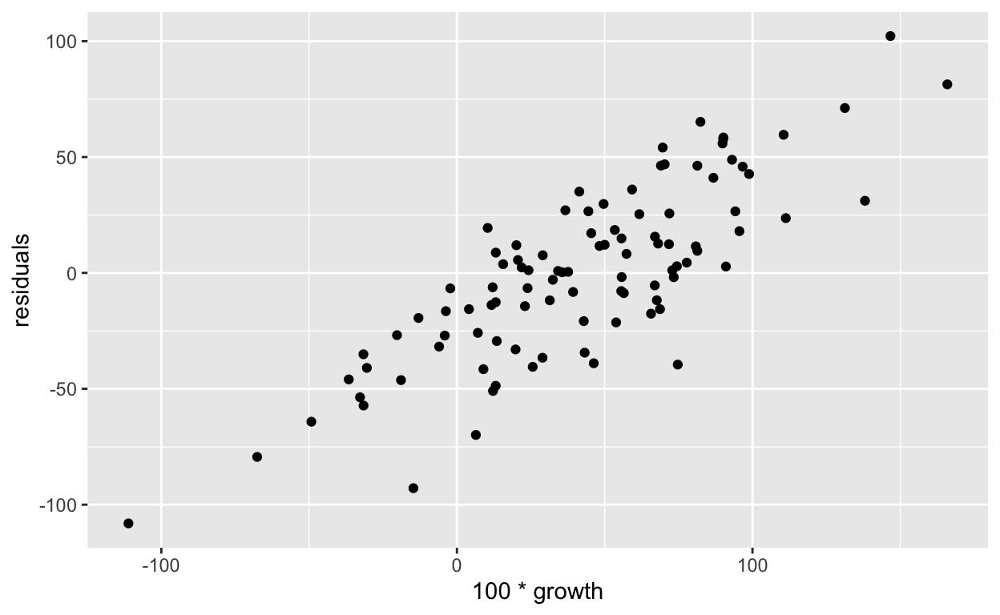
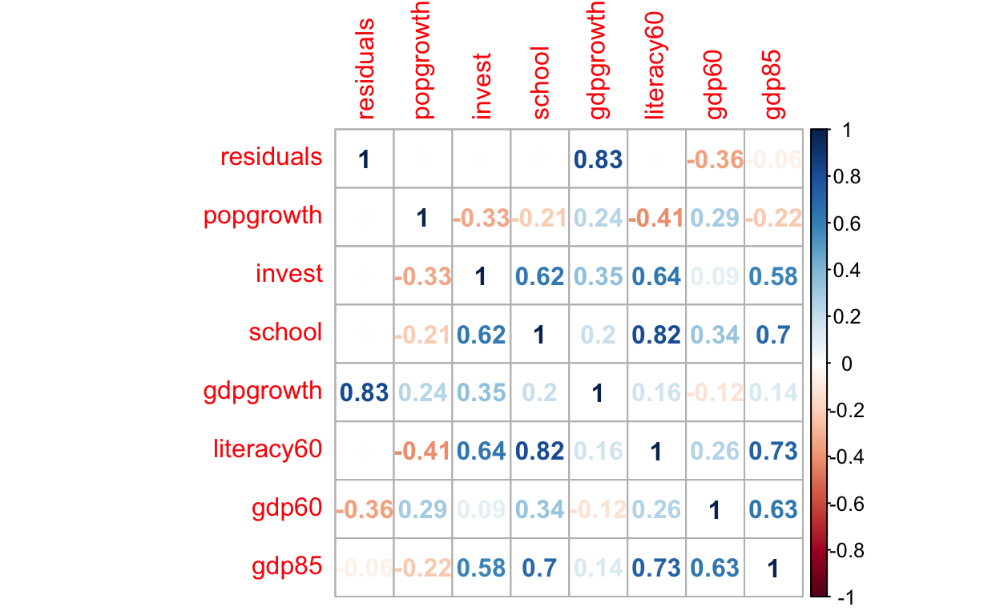
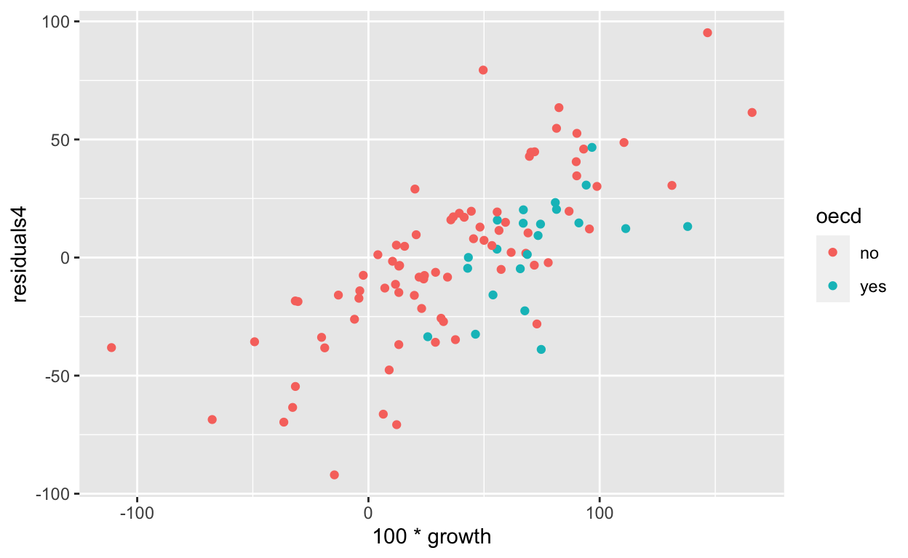

To use this notebook, open it in RStudio and run the code in the blocks.
The purpose of this lecture is to become acquainted with certain features of linear regression
We will use the same dataset from the lecture 7
library(AER)
library(rmarkdown)
library(dplyr)
library(ggplot2)
data("GrowthDJ")
dj <- GrowthDJ
dj %>% paged_tableIn this lecture we will go beyond simple pairwise regressions. Our goal is to find the drivers of the economic growth, which we define in the following way:
dj <- dj %>% mutate(growth = log(gdp85) - log(gdp60))When we have a data set with multiple explanatory variables it makes a lot of sense to put them all in the model after preliminary data analysis:
mod <- lm(growth ~ gdpgrowth + popgrowth + invest + school + literacy60, data = dj)
summary(mod)
Call:
lm(formula = growth ~ gdpgrowth + popgrowth + invest + school +
literacy60, data = dj)
Residuals:
Min 1Q Median 3Q Max
-0.022616 -0.007598 0.001067 0.007442 0.023296
Coefficients:
Estimate Std. Error t value Pr(>|t|)
(Intercept) 3.152e-03 4.388e-03 0.718 0.474
gdpgrowth 2.497e-01 6.894e-04 362.210 <2e-16 ***
popgrowth -2.507e-01 1.288e-03 -194.538 <2e-16 ***
invest 2.732e-04 1.981e-04 1.379 0.171
school 6.760e-05 5.600e-04 0.121 0.904
literacy60 -9.216e-05 5.758e-05 -1.601 0.113
---
Signif. codes: 0 '***' 0.001 '**' 0.01 '*' 0.05 '.' 0.1 ' ' 1
Residual standard error: 0.01033 on 94 degrees of freedom
(21 observations deleted due to missingness)
Multiple R-squared: 0.9995, Adjusted R-squared: 0.9995
F-statistic: 3.948e+04 on 5 and 94 DF, p-value: < 2.2e-16As you see the \(R^2\) in this model is almost 1. \(R^2\) can be loosely interpreted of how good your model is. The higher the \(R^2\), the better the model. However values close to 1 are usually indication that model is too good to be true.
Let us leave only the two most significant variables in the model and see what that gives us. The standard output of summary can be made to look much better. There are various R packages which allows to do that. He re is how it looks from sjPlot:
library(pander)
library(sjPlot)
mod1 <- lm(growth ~ gdpgrowth + popgrowth, data = dj)
tab_model(mod1)| growth | |||
|---|---|---|---|
| Predictors | Estimates | CI | p |
| (Intercept) | 0.00 | -0.00 – 0.01 | 0.438 |
| gdpgrowth | 0.25 | 0.25 – 0.25 | <0.001 |
| popgrowth | -0.25 | -0.25 – -0.25 | <0.001 |
| Observations | 105 | ||
| R2 / R2 adjusted | 1.000 / 1.000 | ||
pander
pander(mod1)| Estimate | Std. Error | t value | Pr(>|t|) | |
|---|---|---|---|---|
| (Intercept) | 0.002342 | 0.003008 | 0.7785 | 0.4381 |
| gdpgrowth | 0.2499 | 0.0005543 | 450.9 | 4.069e-170 |
| popgrowth | -0.2504 | 0.001039 | -241.1 | 2.097e-142 |
Note that both coefficients are 0.25. Let us examine this in more detail. The variable gdpgrowth is the average growth of gdp expressed in percentages and variable population is the average growth of working population again in percentages. The variable growth is simply a growth per gdp capita from the year 1960 to the year 1985. It was calculated using logs:
\[ growth = \log\frac{gdp_{85}}{gdp_{60}} \] Now gdp per capita is simply gdp divided per population. Let us put it in the formula. We will use the all caps to distinguish between per capita and total gdp: \[ growth = \log\frac{\frac{GDP_{85}}{pop_{85}}}{\frac{GDP_{60}}{pop60}} = \log\frac{GPD_{85}}{GDP_{60}}- \log\frac{pop_{85}}{pop_{60}} \]
The average growth is simply the average of yearly growths, so we get
\[ GPD_{avggrowth} = \frac{1}{25}\left(\log\frac{GDP_{61}}{GDP_{60}} + ... + \log\frac{GDP_{85}}{GDP_{84}}\right) = \frac{1}{25}\log\frac{GPD_{85}}{GDP_{60}} \] And we finally can see why our model is so good. It is very good because growth is simply 25 times average growth minus the population growth by design. (The coefficient in regression is 0.25 not 25, why?)
Adding the variables which have an deterministic algebraic relationship in to the regression model is one of the common pitfalls in modelling.
Since all our variables are in percentage points let us convert the growth to percentage points too. This can be done either by redefining the variable or doing that directly in the formula. For the transformations in R it is necessary to envelope them in a function I:
mod2 <- lm(I(100*growth) ~ popgrowth + invest + school + literacy60, data = dj)
tab_model(mod2)| I(100 * growth) | |||
|---|---|---|---|
| Predictors | Estimates | CI | p |
| (Intercept) | 5.62 | -26.75 – 37.98 | 0.731 |
| popgrowth | -7.15 | -15.93 – 1.63 | 0.109 |
| invest | 2.91 | 1.57 – 4.25 | <0.001 |
| school | 2.24 | -1.87 – 6.35 | 0.282 |
| literacy60 | -0.20 | -0.62 – 0.23 | 0.362 |
| Observations | 100 | ||
| R2 / R2 adjusted | 0.335 / 0.307 | ||
\(R^2\) is not that high, and only one coefficient is significant. Significance should be treated with care, as it is valid only when the certain assumptions are met.
If we ignore the significance the model interpretation is quite a straightforward one. Since all our variables are in percentage points, the coefficients show the effect of change in one percentage point.
We see that if all the variables are zeros then country gdp per capita grew 5.62% over 25 years. Each additional percentage point of population growth sets back the country growth by 7.15 percentage points. Each additional investment ratio to gdp percentage point adds 2.91 perecentage points and so on.
This model was fitted to all of the countries. Since we have some country groupings it is always good to check whether the same model applies for all of them.
Let us add the fit and residuals into the original data set
dj1 <- dj %>% mutate(fitted = NA, residuals = NA)
dj1$fitted[-mod2$na.action] <- fitted(mod2)
dj1$residuals[-mod2$na.action] <- residuals(mod2)
ggplot(aes(x = 100*growth, y = residuals), data = dj1) + geom_point()
This graph immediately shows why it is very important to look into the regression residuals. We see clearly that there is a very visible relationship between the residuals and growth. One of the main assumptions of the linear regression model is that the remaining error is a noise (white noise, zero mean iid symmetric random variables, etc). Noise should not have any structure. If residuals have structure this means that there is a some variable(s) that we missed.
One of the simple checks we can do is simply calculate correlation of the residuals all the variables:
corrplot::corrplot(dj1 %>% select(residuals,popgrowth, invest, school, gdpgrowth,literacy60, gdp60, gdp85) %>% cor(use = "pairwise"), method = "number")
Residuals have zero correlation with the variables in regression, high correlation with gdpgrowth, medium correlation with gdp60 and low correlation with gdp85.
Let us add the gdp60 to the model.
mod3 <- lm(I(100*growth) ~ gdp60+popgrowth + invest + school + literacy60, data = dj)
tab_model(mod2, mod3)| I(100 * growth) | I(100 * growth) | |||||
|---|---|---|---|---|---|---|
| Predictors | Estimates | CI | p | Estimates | CI | p |
| (Intercept) | 5.62 | -26.75 – 37.98 | 0.731 | -14.68 | -45.42 – 16.06 | 0.346 |
| popgrowth | -7.15 | -15.93 – 1.63 | 0.109 | 0.90 | -7.82 – 9.62 | 0.839 |
| invest | 2.91 | 1.57 – 4.25 | <0.001 | 2.62 | 1.39 – 3.84 | <0.001 |
| school | 2.24 | -1.87 – 6.35 | 0.282 | 3.85 | 0.05 – 7.65 | 0.047 |
| literacy60 | -0.20 | -0.62 – 0.23 | 0.362 | -0.05 | -0.44 – 0.34 | 0.810 |
| gdp60 | -0.00 | -0.00 – -0.00 | <0.001 | |||
| Observations | 100 | 100 | ||||
| R2 / R2 adjusted | 0.335 / 0.307 | 0.456 / 0.427 | ||||
gdp60 is measured is immediately very significant. However the interpretation of the coefficient would be a percentage point for every gdp per capita dollar. Which does not make a lot of sense. If we change it to log then the interpretation would be a percentage point of change in gdp per capita in percent.
Let us compare the three models and change the output to make the comparison easier.
mod4 <- lm(I(100*growth) ~ log(gdp60)+popgrowth + invest + school + literacy60, data = dj)
tab_model(mod2, mod3, mod4, p.style = "asterisk", show.ci = FALSE)| I(100 * growth) | I(100 * growth) | I(100 * growth) | |
|---|---|---|---|
| Predictors | Estimates | Estimates | Estimates |
| (Intercept) | 5.62 | -14.68 | 178.71 *** |
| popgrowth | -7.15 | 0.90 | -1.73 |
| invest | 2.91 *** | 2.62 *** | 3.04 *** |
| school | 2.24 | 3.85 * | 5.23 ** |
| literacy60 | -0.20 | -0.05 | 0.20 |
| gdp60 | -0.00 *** | ||
| gdp60 [log] | -29.17 *** | ||
| Observations | 100 | 100 | 100 |
| R2 / R2 adjusted | 0.335 / 0.307 | 0.456 / 0.427 | 0.477 / 0.449 |
|
|||
As we can see the adding of the significant variable changed the coefficients of the regression and their signifance. Let us add the residuals of all the models and compare the plots
dj1 <- dj %>% mutate(residuals2 = NA, residuals3 = NA, residuals4 = NA)
dj1$residuals2[-mod2$na.action] <- residuals(mod2)
dj1$residuals3[-mod3$na.action] <- residuals(mod3)
dj1$residuals4[-mod4$na.action] <- residuals(mod4)
ggplot(aes(x = 100*growth, y = residuals4, colour= oecd), data = dj1) + geom_point()
The situation has improved somewhat but we are still missing some important variable.
Since we have some grouping variables let us see whether they can improve the situation. Let us include oecd in the model.
mod5 <- lm(I(100*growth) ~ log(gdp60)*oecd + popgrowth + invest + school+ literacy60, data = dj)
summary(mod5)
Call:
lm(formula = I(100 * growth) ~ log(gdp60) * oecd + popgrowth +
invest + school + literacy60, data = dj)
Residuals:
Min 1Q Median 3Q Max
-88.566 -18.229 1.632 17.343 96.813
Coefficients:
Estimate Std. Error t value Pr(>|t|)
(Intercept) 178.7780 40.0734 4.461 2.30e-05 ***
log(gdp60) -29.9941 6.5665 -4.568 1.53e-05 ***
oecdyes 180.1791 133.2572 1.352 0.1797
popgrowth 1.3740 5.4395 0.253 0.8011
invest 2.8592 0.6110 4.680 9.84e-06 ***
school 5.0154 1.9351 2.592 0.0111 *
literacy60 0.2131 0.2051 1.039 0.3014
log(gdp60):oecdyes -19.1351 15.5645 -1.229 0.2221
---
Signif. codes: 0 '***' 0.001 '**' 0.01 '*' 0.05 '.' 0.1 ' ' 1
Residual standard error: 34.11 on 92 degrees of freedom
(21 observations deleted due to missingness)
Multiple R-squared: 0.4923, Adjusted R-squared: 0.4536
F-statistic: 12.74 on 7 and 92 DF, p-value: 2.452e-11When factor variable is included in this way, R converts the factor variable into dummy variables, one variable for each factor level. The dummy variable coresponding to the factor level get values 1 for the rows which had that factor level and zero for all the others. Such created variables sum to one (why?) so one is dropped. In the variable oecd case, we see that level no is dropped.
The variable log(gdp60):oecdyes is the product of variables log(gdp60) and dummy variable equaling 1 for countries belonging to oecd.
Here is how the new model compares to the old ones:
tab_model(mod2, mod4, mod5, p.style = "asterisk", show.ci = FALSE)| I(100 * growth) | I(100 * growth) | I(100 * growth) | |
|---|---|---|---|
| Predictors | Estimates | Estimates | Estimates |
| (Intercept) | 5.62 | 178.71 *** | 178.78 *** |
| popgrowth | -7.15 | -1.73 | 1.37 |
| invest | 2.91 *** | 3.04 *** | 2.86 *** |
| school | 2.24 | 5.23 ** | 5.02 * |
| literacy60 | -0.20 | 0.20 | 0.21 |
| gdp60 [log] | -29.17 *** | -29.99 *** | |
| oecd [yes] | 180.18 | ||
| gdp60 [log] * oecd [yes] | -19.14 | ||
| Observations | 100 | 100 | 100 |
| R2 / R2 adjusted | 0.335 / 0.307 | 0.477 / 0.449 | 0.492 / 0.454 |
|
|||
Unfortunately there is no marked improvement in the results. Create residual plot for this model to see that.
This approach were we try to add variables and see the resulting model can be automated by adding various combinations of the variables and their transformations. Package leaps for example can be used to do that. However models created in such a way should only be used for their predictive power and measured as such.
Instead of trying out various combinations based on your intuition or on automation it is advisable to look into available research.
This particular dataset was explored by economists S. N. Durlauf and P. A. Johnson in the article Multiple Regimes and Cross-Country Growth Behaviour
The reproduction of the results of that article was done by R. Koenker and A. Zeileis in the article On Reproducible Econometric Research.
Given the analysis already made try to estimate the models in the articles and see whether they managed to solve the problem of the ommited variable.